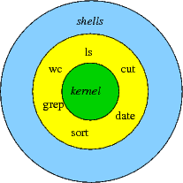

linux

Linux：是一种自由和开放源码的类 UNIX 操作系统。该操作系统的内核由林纳斯·托瓦兹在 1991 年 10 月 5 日首次发布，在加上用户空间的应用程序之后，成为 Linux 操作系统
liunx 常用命令
- netstat -ntpl 查看进程
- netstat -atunlp
- ss –an –p | grep 8080
- ps -ef | grep jenkins
- lsof -i:80
- cat /etc/passwd 查看用户列表
- kill -9 pid 强制杀死进程
- killall nginx 杀死 nginx 所有的进程
- ssh 启动 sudo service ssh start
- tar -cvf vitest.zip vitest 压缩
- tar -xvf vitest.zip 解压缩
- systemctl start firewalld 开启防火墙
- systemctl stop firewalld 关闭防火墙
- systemctl status firewalld 查看防火墙状态
- firewall-cmd –list-all 查看所有的信息
- Chmod 600 ubuntu02_key 修改私钥权限
- ps -ef | grep nginx 查看 nginx 的进程
- sudo passwd 设置 root 用户密码
- su root 切换用户
- /etc/profile //环境变量配置文件
- ssh root@192.168.50.14 -P 8090
- 复制文件：scp width.html roottest@192.168.50.141:home/newtest
- 复制目录：scp -r filename roottest@192.168.50.141:home/newtest
- ssh roottest@192.168.50.141
- service jenkins restart 启动 jenkins 进程
- service nginx restar 启动 nginx 进程
- yum uninstall nginx 卸载
- curl 127.0.0.1; 访问网络
- Exit：退出
- hostname hb 更改主机用户名
- where is nginx 查找文件位置
- which nginx (别名)查找文件位置
- find /etc -name init.d 查找文件
- find /etc -name init.* (多个)查找文件
- find /etc -name init.? （一个）查找文件
- find /etc -iname init.T 忽略大小写
- find /etc -atime 5 //文件访问时间
- find /etc -ctime 5 //改变文件属性
- find /etc -mtime 5 //修改时间
- find /etc -size -100k //文件小于 100k 的
- find /etc -size +100k //文件大于 100k 的
- find /etc -size 100k //文件等于 100k 的
- main ls 查看帮助
- history 查看历史记录
- top 产看系统信息
- free 查看内存
- ip a ip 地址
- telnet www.baidu.com 80 查看端口
配置免密登录
- 注如果 scp ssh 失败：
sudo ps -e |grep ssh“–>回车–>有 sshd,说明 ssh 服务已经启动，如果没有启动，输入”sudo service ssh start“–>回车–>ssh 服务就会启动 如果没有下载 apt-get install openssh-server 并且
ssh-keygen –t rsa –C ‘name’ -f 'wenjianming_key’
- -t 选择加密算法
- -C 名字
- -f 生成密钥名字
- rsa 加密方式
- wenjianming_key.pub >> authorized_keys //把公钥追加 authorized_keys
覆盖
追加
- Exit：退出
- ssh 登录：ssh -i pri-key root@192.168.50.134
拷贝公钥
ssh-copy-id
ssh-copy-id -i .ssh/id_rsa.pub 用户名字@192.168.x.xxx
known_hosts: 存放其他服务器生成的指纹
config 配置
Host evil-cloud
User root
Host yideng
HostName 192.168.50.142
port 22
IdentityFile ~/.ssh/new
IdentitiesOnly yes
Protocol 2
Compression yes
ServerAliveInterval 60
ServerAliveCountMax 20
LogLevel INFO
ssh yideng 可直接登录
文件夹作用
/bin: /usr/bin: 可执行二进制文件的目录，如常用的命令ls、tar、mv、cat等。
/boot：放置linux系统启动时用到的一些文件。/boot/vmlinuz 为 linux 的内核文件，以及 /boot/gurb。建议单独分区，分区大小100M即可
/dev：存放linux系统下的设备文件，访问该目录下某个文件，相当于访问某个设备，常用的是挂载光驱 mount /dev/cdrom /mnt。
/etc：系统配置文件存放的目录，不建议在此目录下存放可执行文件，重要的配置文件有 /etc/inittab、/etc/fstab、/etc/init.d、/etc/X11、/etc/sysconfig、/etc/xinetd.d修改配置文件之前记得备份。
注：/etc/X11 存放与 x windows 有关的设置。
/home：系统默认的用户家目录，新增用户账号时，用户的家目录都存放在此目录下，~表示当前用户的家目录，~edu 表示用户 edu 的家目录。建议单独分区，并设置较大的磁盘空间，方便用户存放数据
/lib: /usr/lib: /usr/local/lib：系统使用的函数库的目录，程序在执行过程中，需要调用一些额外的参数时需要函数库的协助，比较重要的目录为 /lib/modules。
/lost+fount：系统异常产生错误时，会将一些遗失的片段放置于此目录下，通常这个目录会自动出现在装置目录下。如加载硬盘于 /disk 中，此目录下就会自动产生目录 /disk/lost+found
/mnt: /media：光盘默认挂载点，通常光盘挂载于 /mnt/cdrom 下，也不一定，可以选择任意位置进行挂载。
/opt：给主机额外安装软件所摆放的目录。如：FC4使用的Fedora 社群开发软件，如果想要自行安装新的 KDE 桌面软件，可以将该软件安装在该目录下。以前的 Linux 系统中，习惯放置在 /usr/local 目录下
/proc：此目录的数据都在内存中，如系统核心，外部设备，网络状态，由于数据都存放于内存中，所以不占用磁盘空间，比较重要的目录有 /proc/cpuinfo、/proc/interrupts、/proc/dma、/proc/ioports、/proc/net/* 等。
/root：系统管理员root的家目录，系统第一个启动的分区为 /，所以最好将 /root和 /放置在一个分区下。
/sbin: /usr/sbin: /usr/local/sbin：放置系统管理员使用的可执行命令，如fdisk、shutdown、mount 等。与 /bin 不同的是，这几个目录是给系统管理员 root使用的命令，一般用户只能"查看"而不能设置和使用。
/tmp：一般用户或正在执行的程序临时存放文件的目录,任何人都可以访问,重要数据不可放置在此目录下
/srv：服务启动之后需要访问的数据目录，如 www 服务需要访问的网页数据存放在 /srv/www 内。
/usr：应用程序存放目录，/usr/bin 存放应用程序，/usr/share 存放共享数据，/usr/lib 存放不能直接运行的，却是许多程序运行所必需的一些函数库文件。/usr/local: 存放软件升级包。/usr/share/doc: 系统说明文件存放目录。/usr/share/man: 程序说明文件存放目录，使用 man ls 时会查询 /usr/share/man/man1/ls.1.gz 的内容建议单独分区，设置较大的磁盘空间
/var：放置系统执行过程中经常变化的文件，如随时更改的日志文件 /var/log，/var/log/message：所有的登录文件存放目录，/var/spool/mail：邮件存放的目录，/var/run:程序或服务启动后，其PID存放在该目录下。建议单独分区，设置较大的磁盘空间
系统启动 变量文件执行过程
/etc/profile
~/.bash_profile -> /etc/profile.d/*.sh -> /etc/profile.d/lang.sh , /etc/sysconfig/i18n
~/.bashrc
/etc/bashrc -> /etc/profile.d/*.sh -> /etc/profile.d/lang.sh , /etc/sysconfig/i18n
命令提示符号
权限问题
ls -a 查看文件 chmod -R u+x tiral 给文件赋予所有者的执行权限 chmod -R u-x tiral 给文件减去所有者的执行权限 chmod -R u=rwx tiral 给文件赋予所有者的读写执行权限 chmod 755 trial
chown user1 trial 给文件赋予所有者的 fuzhi chgrp user1 trial
权限试用者
- u:所有者
- g:所有组
- o:其他人
权限
r:读 4。（cat more head tail）
- w:写 2. echo vi
- x:执行 1
执行命令
ls :罗列文件列表
-a :显示所有文件，包括隐藏文件
-l :显示详细信息
-d :查看目录属性
-h :人性化显示文件大小
-i :显示incode
mkdir 创建文件
-p: 递归创建文件
cd 切换目录
cd ~ :进入当前用户的家目录
cd .. :进入上一次目录
cd - :进入上次目录
cp 切换目录
-r :复制目录
-p :连带文件属性
-d :如果源文件是连接文件 则复制链接属性
-a :相当于 -pdr
mv
查询命令
locate 在后台数据库中按文件名搜索，搜索速度更快
/var/lib/mlocate 存储文件名与数据库数据
updatedb :更新创建的文件名存入数据库中
/etc/updatedb.conf: 配置文件
PRUNE_BIND_MOUNTS='yes' 开启搜索限制
PRUNEFS= 搜索时，不搜索的文件系统
PRUNENAMES= 搜索时，不搜索的文件类型
PRINEPATHS= 搜索时，不搜索的文件路径
搜索
which
whereis 查询命令的配置文件
-b :查找可执行的文件
-m :只查找帮助文件
whoami
whatis ls
whatis cd 确定是否是shell内部命令
find /root -iname install.log 不区分大小写
find /root -name "*[cd]"
find /root -nouser 没有所有者文件， sys proc 没有属于正常。外来文件
find /var/log -mtime +10 10天前
find /var/log -mtime -10 10天内
find . -size 25k 查找文件大小是25K的文件
find . -size +25K 查找文件大小是大于25K的文件
find /etc -size +20k -a size -50k 查找etc/ 目录下 大于20k并且小于50k 的文件
find /etc -size +20k -a size -50k -exec ls lh {}\; 查找etc/ 目录下 大于20k并且小于50k 的文件,并显示详细信息
grep 在文件当中匹配符合条件的字符串
-i 忽略大小写
-v 排除指定字符串
帮助命令
man 帮助命令
man ls ls帮助信息
man -f 相当 whatis
man -k 相当 apropos
man 的级别
1: 查看命令帮助
2: 查看可被内核调用的函数的帮助
3: 查看函数和函数库的帮助
4: 查看特殊文件的帮助
5: 查看配置文件的帮助
6: 查看游戏的帮助
7: 查看其他杂项的帮助
8: 查看系统管理员可用命令的帮助
9: 查看和内核相关文件的帮助
apropos ls 含有ls关键字的帮助信息
ls --help 查看ls帮助信息
help cd 获取内部命令
info 帮助信息
-回车 进入子帮助页面
-u :进入上层页面
-n :进入下一个帮助小节
-p : 进入上一个帮助小节
-q : 退出
压缩
.zip 格式压缩
zip 压缩文件名 源文件
zip -r 压缩文件名 源目录
uzip 解压文件名
.gz 格式压缩
gzip 源文件
gzip -c 源文件 压缩文件
gzip -r 目录
gzip -d 解压文件
gunzip 解压文件
.bz2 格式压缩
bzip2 源文件 压缩.bz2格式 不保留源文件
bzip2 -k 源文件 压缩之后保留源文件
bzip2 -d 解压文件
bunzip2 解压文件
.tar.bz2 格式
tar -jcv -f filename.tar.bz2 被压缩的文件或目录
tar -jxv -f filename.tar.bz2 -C 欲解压到的目录
.tar.gz
tar -zcvf 压缩名 源文件 压缩
tar -zxvf 压缩包名称 解压
.tar 格式
tar -cvf filename.tar xxx 打包
tar -xvf filename.tar 解压x
解压包
tar -cvf 压缩
tar -xvf 解压
先打包后压缩
关机
shutdown -r now
shutdown -r 05:30 &
shutdown -c
halt
init 0
poweroff
reboot
init 6
用户
w 用户名
命令输出
USER:登陆的用户名
TTY: 登陆终端
FROM:ip地址登录
LOGIN@:登陆时间
IDLE:用户闲置时间
JCPU:指的是和改终端连接的所有占用时间
PCPU:当前进程所占用的时间
WHAT:当前正在运行的命令
who 用户名称
命令输出
-:用户名
-: 登陆终端
-:ip登录时间
系统信息
last
last 默认读取/var/log/wtmp 文件数据
命令输出
-:用户名
-:登陆终端
-:登陆 ip
-:登录时间
-:退出时间
lastlog
lastlog 默认读取/var/log/lastlog 文件数据
命令输出
-:用户名
-:登陆终端
-:登陆 ip
-:最后一次登录时间
history 历史命令
-c:清空历史命令
-w:把缓存中的历史命令写入历史命令保存文件 ～/.bash_history
alias ls='ls --color=never' 添加别名
alias 查看别名
unalias 删除别名 1. 第一顺位 用绝对路径或相对路径执行的命令 2. 第二顺位 执行别名 3. 第三顺位 执行 bash 的内部命令 4. 第三顺位 按照\$PATH 环境变量定义的目录查找顺序找到的第一个命令
输出重定向
命令 >> 文件 2>&1 以追加的方式，把正确输出和错误的输出都保存到同一个文件中
命令 &>>文件 以追加的方式，把正确输出和错误的输出都保存到同一个文件中
命令 >>文件 1 2>>文件 2 ：把正确的追加到文件 1 中 把错误的追加到文件 2 中
wc 输入重定向
-c 统计字节数
-w 统计单词数
-l 统计行数
源码包编译过程
| 编译方法 | 命令 | 产物 |
|---|---|---|
| 检测配置 | ./configure --prefix=/user/local/xxx | Makefile |
| 编译 | make | 二进制可执行文件 |
| 安装 | make install | 安装到指定目录 |
!> prefix:指定文件编译地址
rpm 包
rpm -q 包名称 ：查询是否安装
rpm -qa ：查询所有已经安装的包
rpm -qf 系统文件名
-q query 查询
-a all 所有
-i information 软件信息
-p package 未按装包信息
-l list 列表
-f file 查询系统文件属于那个软件包
-R requires 依赖
rpm -qa | grep httpd
rpm -ivh 包全名:安装包名
-i install 安装
-v verbose 详细信息
-h hash 显示进度
--nodeps 不检测依赖性
rpm -Uvh 包全名 ：升级
-U upgrade 升级
rpm -V 校验已安装的包信息
验证信息的8个信息具体内容
s:文件大小是否改变
M: 文件类型或者文件权限是否改变
5: 文件MD5校验是否改变
D: 设备主从代码是否改变
L: 文件路径是否改变
U: 文件属主是否改变
G:文件的数组是否改变
T:文件修改时间是否改变
文件类型
c:配置文件 config file
d:普通文档 documenttion
g:鬼文件 gost file
L:授权文件 license file
r:描述文件 readme
rpm 包中文件提取
rpm2cpio 包全名 |cpio -idv .文件绝对路径
yum
yum list 列出所有可安装的列表 yum seacrh nginx 搜索关于 nginx 列表 yum -y update nginx 升级 yum -y remove nginx 卸载
yum grouplist 列出所有可用的软件组列表 yum groupinstall “Chinese Suport” 安装软件组 yum groupremove “Chinese Suport” 删除软件组
shell 命令

- /bin/bash -x first_shell.sh //执行 shell 文件 调试错误
- /bin/bnsh -n first_shell.sh //执行 shell 文件 调试错误
shell 编程常见的系统变量解析
1. $0 当前程序的名称
2. $n 当前程序的第 n 个参数,$1-$9 代表第一到第九个参数
3. $_ :代表命令行中的所有参数，$_ 把所有的参数看成一个整体
4. $@ :这个变量也代表命令行中所有参数，不过$@把每个参数区分中
5. $\* 当前程序的所有参数 ( 不包括程序本身 )
6. $# 当前程序的参数个数 ( 不包括程序本身 )
7. $? 命令或程序执行完后的状态，一般返回 0 表示执行成功。
8. $$ 当前进程号
9. $! 后台运行的进程号 pid
10. $UID 当前用户的 ID
11. $PWD 当前所在的目录
12. ‘’：单引号 在单引号中所有的特殊符号，如"\$" 和 "`" 都没有特殊含义 "": 双引号 在双引号中特殊符号都没有特殊含义 但是 "\$" 和 "`"和“\”例外 拥有 “调用变量的值”，“引用命令”，“转义符”的特殊含义
13. ``: 反引号 在反引号扩起来的内容是系统命令，在 Bash 中会优先执行它，和$()作用一样，不过推荐用 $(),
14. $(): 和反引号一样，用来引用系统命令
15. #: 在shell脚本中，#开头的行代表注释
16. $: 用于调用变量的值，如需要调用 name 的值时，需要用$name的方式
17. \ : 转义符号 跟在\之后的特殊符号将失去特殊含义，变为普通自负 \$ 将输出 $ 符号 ，而不做变量引用
8. \a 输出警告
9. \b 退格键 向左侧删除
10. \n 换行符
11. \r 回车键
12. \t tap 键
13. \v 垂直制表符
14. \0nnn 八进制
15. \xhh 十六进制
echo -e "\e[1;31m hello world \e[0m"
echo -e "\e[1;32m hello world \e[0m"
echo -e "\e[1;33m hello world \e[0m"
echo -e "\e[1;34m hello world \e[0m"
echo -e "\e[1;35m hello world \e[0m"
echo -e "\e[1;36m hello world \e[0m"
echo -e "\e[1;37m hello world \e[0m"
echo -e "\e[1;30m hello world \e[0m"
Var="1234"
readonly Var //使用 readonly 命令可以将变量定义为只读变量
unset Var //使用 unset 命令可以删除变量
echo ${#Var} #获取字符串长度 输出 4
echo ${Var:2:3} # 输出34 //提取子字符串
nameone=(1 2 3 4);
${array_name[n]} //数组元素值的一般格式
${array_name[@]} //获取数组中的所有元素
length=${#array_name[@]} //取得数组元素的个数
length=${#array_name[*]} // 或者
lengthn=${#array_name[n]}// 取得数组单个元素的长度
注释
- 以 # 开头的行就是注释，会被解释器忽略
- 多行注释
:<脚本执行
方式一
chmod 755 hello.sh
./hello.sh
方式二
bash hello.sh
设置环境变量
export HD='hello Docker'
echo $PATH 查看系统环境变量
PATH = "$PATH":/root/sh 增加 PATH 变量的值
ps1 环境变量
locale 当前语言
-LANG 定义系统主语系变量
-LC_ALL 罗列支持的语言
echo \$LANG 当前语言
locale -a | more 罗列支持的语言
cat /etc/sysconfig/i18n
创建目录
#!/bin/bash
DIR=$1
echo -e '\033 [32m-------------------\033[0m'
:
if ( ! -d $DIR ); then
mkdir -p $DIR
echo "the $DIR create success!!"
else
echo "the $DIR is exist"
exit
fi
创建文件
#!/bin/bash
FILE=$1
if [ ! -f $FILE ]; then
touch $FILE
echo "the $FILE create success!!"
else
echo "the $FILE is exist"
exit
fi
算术运算符
expr 是一款表达式计算工具，使用它能完成表达式的求值操作。
+ 加法 `expr $a + $b` 结果为 30。
- 减法 `expr $a - $b` 结果为 -10。
* 乘法 `expr $a \* $b` 结果为 200。
/ 除法 `expr $b / $a` 结果为 2。
% 取余 `expr $b % $a` 结果为 0。
= 赋值 a=$b 将把变量 b 的值赋给 a。
== 相等。用于比较两个数字，相同则返回 true。 [ $a == $b ] 返回 false。
!= 不相等。用于比较两个数字，不相同则返回 true。
-eq 检测两个数是否相等，相等返回 true。 [ $a -eq $b ] 返回 false。
-ne 检测两个数是否不相等，不相等返回 true。 [ $a -ne $b ] 返回 true。
-gt 检测左边的数是否大于右边的，如果是，则返回 true。 [ $a -gt $b ] 返回 false。
-lt 检测左边的数是否小于右边的，如果是，则返回 true。 [ $a -lt $b ] 返回 true。
-ge 检测左边的数是否大于等于右边的，如果是，则返回 true。 [ $a -ge $b ] 返回 false。
-le 检测左边的数是否小于等于右边的，如果是，则返回 true。 [ $a -le $b ] 返回 true。
! 非运算，表达式为 true 则返回 false，否则返回 true。 [ ! false ] 返回 true。
-o 或运算，有一个表达式为 true 则返回 true。 [ $a -lt 20 -o $b -gt 100 ] 返回 true。
-a 与运算，两个表达式都为 true 才返回 true。 [ $a -lt 20 -a $b -gt 100 ] 返回 false。
&& 逻辑的 AND [[ $a -lt 100 && $b -gt 100 ]] 返回 false
|| 逻辑的 OR [[ $a -lt 100 || $b -gt 100 ]] 返回 true
文件测试运算符
= 检测两个字符串是否相等，相等返回 true。 [ $a = $b ] 返回 false。
!= 检测两个字符串是否相等，不相等返回 true。 [ $a != $b ] 返回 true。
-z 检测字符串长度是否为0，为0返回 true。 [ -z $a ] 返回 false。
-n 检测字符串长度是否为0，不为0返回 true。 [ -n "$a" ] 返回 true。
$ 检测字符串是否为空，不为空返回 true。 [ $a ] 返回 true。
-b file 检测文件是否是块设备文件，如果是，则返回 true。 [ -b $file ] 返回 false。
-c file 检测文件是否是字符设备文件，如果是，则返回 true。 [ -c $file ] 返回 false。
-d file 检测文件是否是目录，如果是，则返回 true。 [ -d $file ] 返回 false。
-f file 检测文件是否是普通文件（既不是目录，也不是设备文件），如果是，则返回 true。 [ -f $file ] 返回 true。
-g file 检测文件是否设置了 SGID 位，如果是，则返回 true。 [ -g $file ] 返回 false。
-k file 检测文件是否设置了粘着位(Sticky Bit)，如果是，则返回 true。 [ -k $file ] 返回 false。
-p file 检测文件是否是有名管道，如果是，则返回 true。 [ -p $file ] 返回 false。
-u file 检测文件是否设置了 SUID 位，如果是，则返回 true。 [ -u $file ] 返回 false。
-r file 检测文件是否可读，如果是，则返回 true。 [ -r $file ] 返回 true。
-w file 检测文件是否可写，如果是，则返回 true。 [ -w $file ] 返回 true。
-x file 检测文件是否可执行，如果是，则返回 true。 [ -x $file ] 返回 true。
-s file 检测文件是否为空（文件大小是否大于0），不为空返回 true。 [ -s $file ] 返回 true。
-e file 检测文件（包括目录）是否存在，如果是，则返回 true。 [ -e $file ] 返回 true。
Shell 函数
#!/bin/bash
demoFun(){
echo "这是我的第一个 shell 函数!"
}
echo "-----函数开始执行-----"
demoFun
echo "-----函数执行完毕-----"
funWithReturn(){
echo "这个函数会对输入的两个数字进行相加运算..."
echo "输入第一个数字: "
read aNum
echo "输入第二个数字: "
read anotherNum
echo "两个数字分别为 $aNum 和 $anotherNum !"
return $(($aNum+$anotherNum))
}
funWithReturn
echo "输入的两个数字之和为 $? !"
shell 编程之其他环境变量
启动时执行的文件
- /etc/profile
- /etc/profile.d/*.sh
- ~/.bash_profile
- ~/.bashrc
- /etc/bashrc
启动时执行的文件
ls y